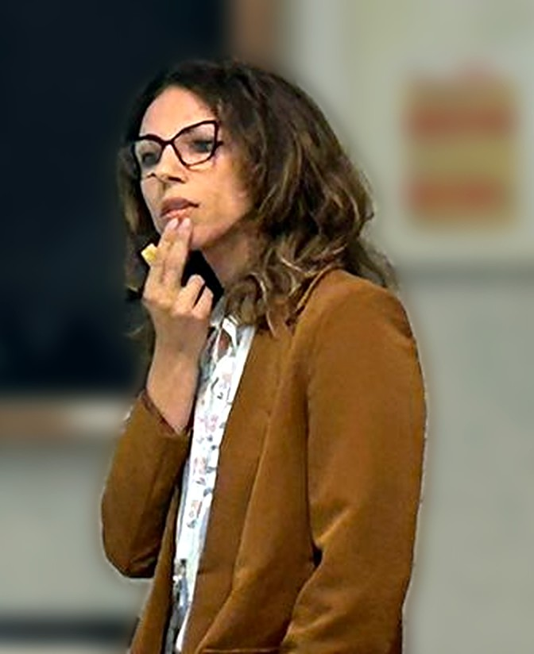

Nunzia Gavitone
Associate Professor of Mathematical Analysis
Department of Mathematics and Applications “R. Caccioppoli”
University of Naples Federico II
About me
I am Associate Professor of Mathematical Analysis at the Department of Mathematics and Applications “R. Caccioppoli” of the University of Naples Federico II.
I graduated in Mathematics at the University of Naples Federico II in 2004 (110/110 cum laude) and received my Ph.D. in Computational and Computer Sciences from the same university in 2009, with a thesis on Hessian equations, quermassintegrals and symmetrization. After a postdoctoral fellowship and researcher positions at Federico II, I became Associate Professor in 2020. In 2022 I obtained the Italian National Scientific Qualification as Full Professor.
My research concerns second order elliptic partial differential equations, with a focus on overdetermined problems, sharp eigenvalue estimates, shape optimization, functional inequalities and symmetrization methods.
Short vitae
Academic career
- 2020 – presentAssociate Professor of Mathematical Analysis (MATH-03/A)Department of Mathematics and Applications “R. Caccioppoli”, University of Naples Federico II
- 2022National Scientific Qualification as Full ProfessorSector 01/A3 – Mathematical Analysis, Probability and Mathematical Statistics
- 2017 – 2020Researcher (RTD-B) in Mathematical AnalysisUniversity of Naples Federico II
- 2017National Scientific Qualification as Associate ProfessorSector 01/A3
- 2013 – 2017Researcher (RTD-A) in Mathematical AnalysisUniversity of Naples Federico II
- 2011 – 2013Postdoctoral research fellowProject “Isoperimetric inequalities and symmetrization methods for fully nonlinear equations”, University of Naples Federico II
- 2009Ph.D. in Computational and Computer Sciences, University of Naples Federico IIThesis: “Hessian equations, quermassintegrals and symmetrization”
- 2004Degree in Mathematics (110/110 cum laude), University of Naples Federico IIThesis: “Equazioni alle derivate parziali del primo ordine, completamente non lineari in forma implicita”
- 2002 – 2004INdAM scholarship for undergraduate students in Mathematics
Research stays abroad
- 2026Czech Technical University in PragueInvited by Prof. D. Krejčiřík, 7–13 June 2026
- 2026Isaac Newton Institute for Mathematical Sciences, CambridgeProgramme Geometric Spectral Theory and Applications, 22 February – 1 March 2026 and 26 April – 3 May 2026
- 2024School of Mathematics, University of BristolVisiting professor, invited by Prof. M. van den Berg, 17–20 September 2024
- 2017School of Mathematics, University of BristolVisiting professor, invited by Prof. M. van den Berg, 3–5 October 2017
- 2016School of Mathematical Sciences, Xiamen University, ChinaResearch fellowship, invited by Prof. C. Xia, 8–23 October 2016
Research projects
- 2026Scientific coordinator, GNAMPA–INdAM project“Optimization problems and geometrical and qualitative aspects of PDE's”
- PRIN-PNRR 2022Member, national research project“Linear and Nonlinear PDE's: New directions and Applications”
- FRA 2021Principal investigator, University of Naples Federico II research grant“OPtimIze – Optimization problems in geometric-functional inequalities and nonlinear PDEs”
- PRIN 2017Member“Qualitative and quantitative aspects of nonlinear PDEs”, national coordinator Prof. B. Sciunzi
- PRIN 2015Member“Partial differential equations and related analytic-geometric inequalities”, national coordinator Prof. A. Cianchi
- FIRB 2013Local coordinator, Naples research unit“Geometric and qualitative aspects of PDEs”, principal investigator Prof. E. Berchio
- 2008 – 2019Member of further PRIN projects (2008, 2012) and GNAMPA projects (2013, 2015, 2017, 2018, 2019)
Conference organization
- 2023Three days on shape optimization and PDE'sNaples, 27–29 November 2023
- 2022Shape Optimisation and Geometric Spectral TheoryICMS, Edinburgh, 19–23 September 2022
- 2019Shape optimization, control and inverse problems for PDEsINdAM intensive period, Naples, May–July 2019 (local organizer)
- 2019VI Italian-Japanese Workshop: Geometric properties for parabolic and elliptic PDE'sCortona, 20–24 May 2019
- 2016Geometric aspects of PDE's and functional inequalitiesCortona, 28–30 April 2016
- 2016Proprietà analitico-geometriche di soluzioni di EDPDepartment of Mathematics and Applications “R. Caccioppoli”, Naples, 25–27 January 2016
Service
- 2026 – presentMember of the Council of the School of Polytechnic and Basic SciencesRepresentative of the Board of the Department of Mathematics and Applications “R. Caccioppoli”, University of Naples Federico II
- 2025 – presentMember of the Department Board (Giunta)Department of Mathematics and Applications “R. Caccioppoli”
- 2025 – presentMember of the Department committee for teaching assignments
- CommitteesMember of selection committees for researcher positionsPolitecnico di Torino, Politecnico di Milano, University of Florence; committees for research fellowships at the University of Naples Federico II
- RefereeingReferee for international journalsincluding Journal of Functional Analysis, Proceedings of the Royal Society of Edinburgh, ESAIM: Control, Optimisation and Calculus of Variations, Analysis and Mathematical Physics, Complex Analysis and Operator Theory, Computational and Applied Mathematics, Ricerche di Matematica. Reviewer for MathSciNet (American Mathematical Society).
Publications
Preprints
- A reverse Faber–Krahn inequality for the Robin Laplacian with negative boundary parameter: small coupling in all dimensions arXiv:2606.24341
Preprint - The Makai inequality in higher dimensions: qualitative and quantitative aspects arXiv:2604.14000
Preprint - On the effectless cut method for Laplacian eigenvalues in any dimensions arXiv:2604.00976
Preprint - Hessian operators, overdetermined problems, and higher order mean curvatures: symmetry and stability results arXiv:2505.23350
Preprint
2026
- On the optimal sets in Pólya and Makai type inequalities DOI
ESAIM: Control, Optimisation and Calculus of Variations 32, 55 - Sharp estimates for the Laplacian torsional rigidity with negative Robin boundary conditions DOI
Bulletin of the London Mathematical Society 58 - On the Serrin's problem with Robin boundary conditions
Nonlinear Analysis 268
2025
- On functionals involving the p-capacity and the q-torsional rigidity DOI
Calculus of Variations and Partial Differential Equations 64, 245 - On a weighted anisotropic eigenvalue problem DOI
Glasgow Mathematical Journal 67 (1)
2024
- A sharp bound for the first Robin–Dirichlet eigenvalue DOI
Journal of Optimization Theory and Applications 203
2023
- On a Steklov–Robin eigenvalue problem
Journal of Mathematical Analysis and Applications 526 - A monotonicity result for the first Steklov–Dirichlet Laplacian eigenvalue DOI
Revista Matemática Complutense 37 - Motion of level sets by inverse anisotropic mean curvature
Communications in Analysis and Geometry 31 (1) - Sharp estimates for the Gaussian torsional rigidity with Robin boundary conditions
Potential Analysis 59
2022
- An isoperimetric inequality for the first Steklov–Dirichlet Laplacian eigenvalue of convex sets with a spherical hole
Pacific Journal of Mathematics 320 - Two inequalities for the first Robin eigenvalue of the Finsler Laplacian DOI
Archiv der Mathematik 118 (2) - The Faber–Krahn inequality for the Hermite operator with Robin boundary conditions DOI
Mathematische Annalen 384
2021
- Efficiency and localisation for the first Dirichlet eigenfunction DOI
Journal of Spectral Theory 11 (3) - Symmetrization with respect to mixed volumes DOI
Advances in Mathematics 388
2020
- A quantitative Weinstock inequality for convex sets DOI
Calculus of Variations and Partial Differential Equations 59 (1)
2019
- Sharp estimates on the first Dirichlet eigenvalue of nonlinear elliptic operators via maximum principle
Advances in Nonlinear Analysis 9 (1) - On the second Dirichlet eigenvalue of some nonlinear anisotropic elliptic operators
Bulletin des Sciences Mathématiques 155
2018
- On the first Robin eigenvalue of a class of anisotropic operators
Milan Journal of Mathematics 86 (2) - On functionals involving the torsional rigidity related to some classes of nonlinear operators
Journal of Differential Equations 265 (12) - Anisotropic Hardy inequalities
Proceedings of the Royal Society of Edinburgh, Section A: Mathematics 148 (3)
2017
- A sharp weighted anisotropic Poincaré inequality for convex domains
Comptes Rendus Mathématique 355 (7) - Optimizing the first eigenvalue of some quasilinear operators with respect to the boundary conditions
ESAIM: Control, Optimisation and Calculus of Variations 23 (4)
2016
- Sharp estimates and existence for anisotropic elliptic problems with general growth in the gradient
Zeitschrift für Analysis und ihre Anwendungen 35
2015
- Symmetrization with respect to the anisotropic perimeter and applications DOI
Mathematische Annalen 363
2014
- Faber–Krahn inequality for anisotropic eigenvalue problems with Robin boundary conditions DOI
Potential Analysis 41 (4) - Characterization of ellipsoids through an overdetermined boundary value problem of Monge–Ampère type
Journal de Mathématiques Pures et Appliquées 101 (6) - Stability results for some fully nonlinear eigenvalue estimates
Communications in Contemporary Mathematics 16 (5) - Sharp bounds for the first eigenvalue and the torsional rigidity related to some anisotropic operators DOI
Mathematische Nachrichten 287 (2–3) - Upper bounds for the eigenvalues of Hessian equations DOI
Annali di Matematica Pura ed Applicata 193 (3)
2013
- Anisotropic elliptic equations with general growth in the gradient and Hardy-type potentials DOI
Journal of Differential Equations 255 (11) - Anisotropic elliptic problems involving Hardy-type potentials DOI
Journal of Mathematical Analysis and Applications 397 (2) - Relative isoperimetric inequality in the plane: the anisotropic case
Journal of Convex Analysis 20 (1)
2012
- Symmetrization for Neumann anisotropic problems and related questions
Advanced Nonlinear Studies 12 (2)
2010
- Weighted eigenvalue problems for Hessian equations
Nonlinear Analysis 73 (11) - Operatori Hessiani, simmetrizzazione e quermassintegrals
La Matematica nella Società e nella Cultura (1) 3
2009
- Isoperimetric estimates for eigenfunctions of Hessian operators
Ricerche di Matematica 58
2007
- Hardy–Sobolev inequalities for Hessian integrals
Bollettino dell'Unione Matematica Italiana (8) 10-B
Conference proceedings
- La disuguaglianza isoperimetrica relativa nel piano: il caso anisotropo
Proceedings of the XIX Congress of the Italian Mathematical Union (UMI) - Simmetrizzazione rispetto al perimetro anisotropo e applicazioni
Proceedings of the XX Congress of the Italian Mathematical Union (UMI)
No publication matches your search.
Invited talks
- 2026Overdetermined problems and higher order mean curvatures: symmetry and stability resultsProgramme Geometric Spectral Theory and Applications (joint seminar with Spectral Geometry in the Clouds), Isaac Newton Institute, Cambridge, 23 February 2026
- 2025On the optimal sets in Pólya and Makai type inequalitiesRecent Advances in PDEs and their Applications, University of Eastern Piedmont, Alessandria, 8–10 September 2025
- 2025On the optimal sets in Pólya and Makai type inequalitiesFunctional Analysis for PDEs, University of Parma, 4–5 September 2025
- 2025On the optimal sets in Pólya and Makai type inequalitiesGeometric-Analytic Methods for PDEs and Applications, Politecnico di Torino, 3–4 June 2025
- 2024Eigenvalue problems in doubly connected domains9th European Congress of Mathematics, Seville, 15–19 July 2024
- 2024Eigenvalue problems in doubly connected domainsFirst Chinese-Italian Workshop on Elliptic PDEs and Variational Problems, Huangshan University, China, 2–7 June 2024
- 2023On the Serrin problem with Robin boundary conditionsShape Optimization and Isoperimetric and Functional Inequalities, Levico, 18–22 September 2023
- 2022An eigenvalue problem for the Laplace operator in doubly connected domainsSpectral Geometry in the Clouds, online seminar, 27 June 2022
- 2022An eigenvalue problem for the Laplace operator in doubly connected domainsRecent Trends in Geometric PDE's, Sapienza University of Rome, 13–14 June 2022
- 2021Sharp estimates for the Gaussian torsional rigidity with Robin boundary conditionsInvited webinar, FernUniversität in Hagen, Germany, 24 November 2021
- 2019A quantitative Weinstock inequalityInternational Conference on Elliptic and Parabolic Problems, Gaeta, 20–24 May 2019
- 2019A quantitative Weinstock inequalitySpectral Theory and Geometry, School of Mathematics, University of Bristol, 14–15 May 2019
Earlier talks (2008–2018)
- 2018Optimization problems related to some anisotropic operatorsMethods of Real Analysis and Theory of Elliptic Systems, INdAM, Rome, 17–21 September 2018
- 2018Sharp estimates via maximum principlesPDE's friends, Politecnico di Torino, 21–22 June 2018
- 2018Sharp estimates via maximum principlesEigenvalues and Inequalities, Institut Mittag-Leffler, Stockholm, 14–18 May 2018
- 2017On functionals involving the torsional rigidity related to some classes of nonlinear operatorsSchool of Mathematics, University of Bristol, 3 October 2017
- 2017Optimization problems related to some anisotropic operators5th Italian-Japanese Workshop on Geometric Properties for Parabolic and Elliptic PDE's, Osaka, 15–19 May 2017
- 2017An overdetermined boundary value problem for Monge–Ampère operatorEquazioni alle Derivate Parziali e Disuguaglianze Analitico-Geometriche Associate, Politecnico di Milano, 17–18 February 2017
- 2016An overdetermined boundary value problem for Monge–Ampère operatorSchool of Mathematical Sciences, Xiamen University, China, 14 October 2016
- 2016Optimizing the first eigenvalue of some quasilinear operators with respect to boundary conditionsPartial Differential Equations and Related Topics, Alghero, 12–16 September 2016
- 2016Optimizing the first eigenvalue of some quasilinear operators with respect to boundary conditionsGeometric and Analytic Inequalities, BIRS, Banff, Canada, 10–15 July 2016
- 2015Simmetrizzazione rispetto al perimetro anisotropo e applicazioniXX Congress of the Italian Mathematical Union, Siena, 7–12 September 2015
- 2015Simmetrizzazione rispetto al perimetro anisotropo e applicazioniUniversity of Brescia, 1 July 2015
- 2015Symmetrization with respect to the anisotropic perimeter and applications4th Italian-Japanese Workshop on Geometric Properties for Parabolic and Elliptic PDE's, Palinuro, 25–29 May 2015
- 2014Caratterizzazione degli ellissoidi attraverso un problema sovradeterminato di tipo Monge–AmpèreGiornata della Ricerca: Advances in Pure and Applied Mathematics, Naples, 18 June 2014
- 2013Characterization of ellipsoids via domain derivative: a new overdetermined boundary value problemNew Trends in Shape Optimization, Erlangen, Germany, 23–27 September 2013
- 2012La disuguaglianza isoperimetrica relativa anisotropa nel piano e applicazioni1st Weekend on Variational Methods and Differential Equations, Catania, 2012
- 2011La disuguaglianza isoperimetrica relativa nel piano: il caso anisotropoXIX Congress of the Italian Mathematical Union, Bologna, 14 September 2011
- 2008Proprietà di convessità di autofunzioni di equazioni hessianeDepartment of Mathematics “Ulisse Dini”, University of Florence, 14 March 2008
Teaching
Academic year 2025/2026
- Analisi Matematica IBachelor's degree in Physics · 12 CFU
- Analisi Matematica IIBachelor's degrees in Civil and Building Engineering · 9 CFU
- Real and Functional AnalysisDegree programme in Mathematical Engineering · 3 CFU
- Introduzione all'Analisi MatematicaPiano Lauree Scientifiche (PLS), course for high school students
Previous teaching
Since 2009 I have taught courses in Mathematical Analysis I and II, Mathematics I (Chemistry), Mathematics and Statistics (Nutraceutical Sciences) and Real and Functional Analysis for degree programmes in engineering, physics, chemistry and mathematics at the University of Naples Federico II. I also prepared the MOOC Metodi Matematici per l'Ingegneria for the Federica Web Learning platform.
Supervision
- 2021 – 2022Scientific supervisor of the postdoctoral fellowship of Dr. Riccardo Molinarolo“Geometric and qualitative aspects of free boundary problems associated with second order PDEs”
Contact
Phone
Office
Department of Mathematics and Applications “R. Caccioppoli”
Complesso Universitario di Monte S. Angelo, Building T
Via Cintia, 80126 Napoli, Italy